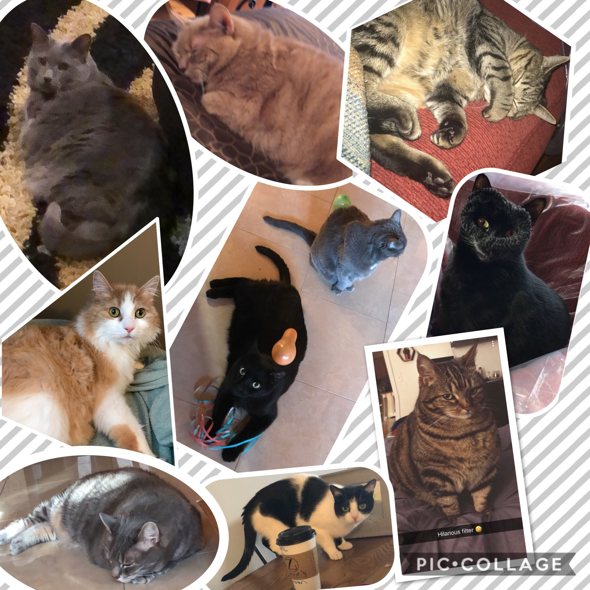

Hey, I'm Krysta, graduating class of 2019 at WPI! I grew up in Meriden, CT with two older brothers and a partner in crime (aka my mom). Both of my brothers graduated from WPI, the same university where I study now, and have been my inspiration to pursue engineering. Between the houses of my parents and my siblings, we have 8 cats, so I guess that means I may be a crazy cat lady in training.
At WPI, I am pursuing a double major in electrical and computer engineering and computer science with a minor in music. In order to complete my degree, I am working with a team to develop a modular system to make off-road vehicles autonomous. My role in this project is to use data fusion and processing to establish decision making while the vehicle is in motion. Look for project updates, team videos, and more information on social media!
Aside from engineering, there are many things I am passionate about, the biggest two being music and travel. I have been singing my entire life, and doing so is by far one of the best aspects. Recently, I have started exploring other ways to experience music, including competing with the WPI ballroom dance team. My passion to travel, is also changing and expanding as I experience more and more cultures and adventures. Just last summer I visited 15 countries, and that is just the beginning!
Work Experience
Previous Programming Classes at WPI
Experience with Various Technologies and Methods